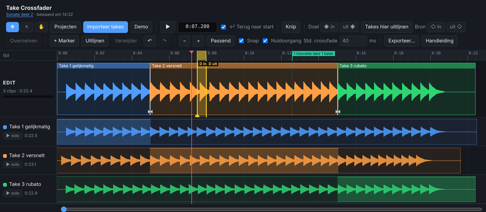
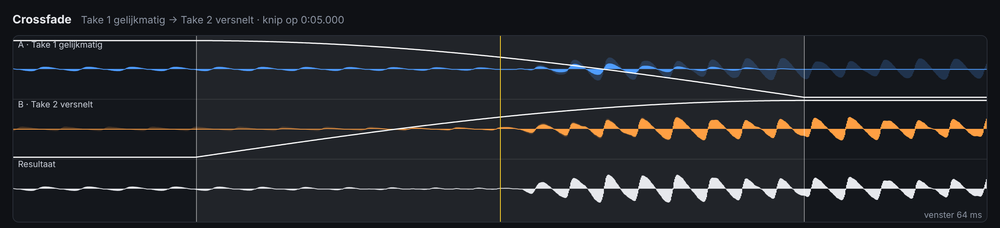
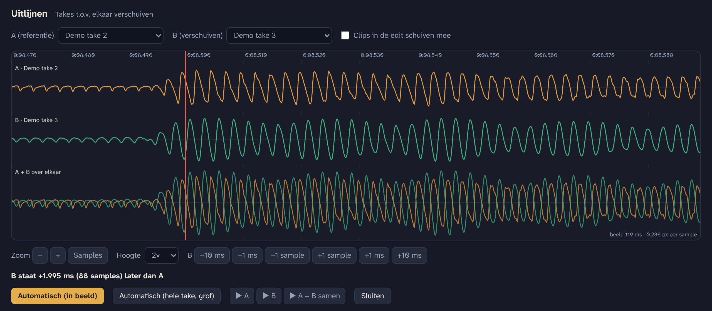

Take Crossfader is een audio-editor om uit meerdere opnames (takes) van hetzelfde stuk één eindversie samen te stellen, met nauwkeurige crossfades op de overgangen. Hij werkt volgens het principe van professionele montagesystemen zoals Sequoia, Pyramix en SADiE: de takes zijn de bronnen, de edit is het doel. Ook takes in vrij tempo kun je noot voor noot op elkaar laten aansluiten.
Gebruik op de Mac bij voorkeur Google Chrome. De editor is in Chrome (Chromium) getest, en Chrome bewaart de projecten op je Mac betrouwbaar. Safari werkt in principe ook, maar is niet getest.
Open de app één keer met internet. Daarna werkt hij ook zonder internet, inclusief MP3-export (nadat je één keer met internet een MP3 hebt gemaakt).

| Onderdeel | Wat het doet |
|---|---|
| Tijdbalk (bovenaan) | Klik = afspeelkop zetten. Slepen = een stuk van de edit selecteren (om te vervangen, weg te halen, te herhalen of te exporteren). Markers verschijnen hier. |
| EDIT-baan | Je eindversie. Clips, crossfades (⋈), fades, en de gele doelpunten. |
| Take-banen | De originele opnames. Klik op de naam om een take te kiezen; ▶ solo speelt die take alleen. |
| Paneel onderaan | Verandert met wat je selecteert: clip, crossfade, take, selectie, marker, uitlijnvenster, exporteren of projecten. Met niets geselecteerd staat hier een korte uitleg. |
| Werkbalk | Projecten, importeren, afspelen, Terug naar start, knippen, Doel/Bron-punten, Takes hier uitlijnen, Overnemen, markers, uitlijnvenster, ongedaan maken, zoom, Snap, Nuldoorgang, standaard-crossfade en exporteren. |
Links in de werkbalk kies je wat slepen in de EDIT- en take-banen doet. Je keuze wordt onthouden.
| Gereedschap | Slepen | Klikken |
|---|---|---|
| ✥ Verplaatsen 1 | Boven een clip: clip verplaatsen. Randen: trimmen. Crossfade: knippunt verschuiven. Leeg stuk: beeld schuiven. | Selecteren en afspeelkop zetten |
| ↖ Selecteren 2 | In de EDIT-baan: een stuk selecteren (zet ook Doel in/uit). Clips verschuiven niet. | Selecteren en afspeelkop zetten |
| ✋ Hand 3 | Overal in de banen: beeld schuiven. Clips verschuiven niet. | Selecteren en afspeelkop zetten |
Werk je vooral met D, H en E, kies dan ↖ Selecteren of ✋ Hand. Dan kun je geen clip per ongeluk verslepen.
De punten D (doel, in de edit) en B (bron, in een take) kun je zetten tijdens het afspelen, op het moment dat je de noot hoort. Gele lijnen laten zien waar ze staan. Esc wist ze.
Staan er verderop al wissels, dan loopt de nieuwe take tot de eerstvolgende wissel, en daarna gaat de edit verder zoals hij was. Komt er niets meer na, dan loopt de take door tot het eind. Zo kun je de edit gewoon van links naar rechts opbouwen.
Is de nieuwe noot iets langer of korter, dan schuift de rest van de edit precies dat verschil op. Latere wissels en markers blijven intact.
Je hoeft niet op volgorde te werken. Wat je al gedaan hebt, blijft staan:
Een herhaling gebruiken: klinkt een passage beter waar hij later in het stuk terugkomt? Wijs dat latere stuk in de take aan met B en ⇧B, sleep in de tijdbalk over het eerdere stuk en druk E. Het latere stuk blijft gewoon staan; je maakt een kopie. Gebruik hier geen H, want die zoekt dezelfde plek en niet de herhaling. Met een zelf aangewezen bronpunt blijft de take-baan liggen waar hij lag.
Lopen de takes niet gelijk op? Lijn ze eerst uit met H, of met ⌥-slepen van de take-baan. Voor vrij tempo zijn werkwijzen B en C geschikter.
Klinkt een wissel als een sprong in volume? Klik op de crossfade (⋈) en kies Volume gelijk maken. De editor meet A en B over 3 seconden rond de knip en past het volume van de nieuwe clip aan. Bij een clip heet dat Volume gelijk aan vorige clip.
Klik op een crossfade (het vlinder-icoon ⋈ onderaan in de EDIT-baan). Onderaan verschijnt de crossfade-editor met de uitgaande take (A), de nieuwe take (B) en het resultaat.

| Wat | Hoe |
|---|---|
| Luisteren | ▶ Beluister of A: 2 s vóór tot 2 s na de knip. L of Herhalen speelt het steeds opnieuw. Voor-/narol stelt die 2 s in. Dubbelklikken op een crossfade werkt ook. |
| Knippunt verschuiven | Sleep in de figuur, of gebruik de knoppen −10/−1/+1/+10 ms, of ← → (met ⇧ per 10 ms). In de EDIT-baan kun je de crossfade ook slepen. |
| Lengte | Schuif Lengte of typ ms. Of houd ⌥ ingedrukt en sleep de crossfade in de EDIT-baan. |
| Vorm | Equal power: standaard, het best tussen verschillende takes. Lineair: bij (bijna) identiek materiaal. S-curve: zacht in en uit. |
| Holle of zwiepende klank | Fase uitlijnen schuift B een paar ms op, zodat de golfvormen in de overgang gelijk lopen. Handmatig kan het met ⌥-slepen in de figuur. |
| Volumesprong | Volume gelijk maken. |
| Heel precies | Uitlijnen in detail… opent het uitlijnvenster voor deze overgang (hoofdstuk 5). |
| Crossfade weghalen | Delete zet de lengte op 0 (harde knip). |
Open met Uitlijnen in de werkbalk, met Uitlijnvenster… bij een take, of met Uitlijnen in detail… bij een crossfade. Je ziet twee bronnen onder elkaar, en in de onderste rij over elkaar heen, met een zoom tot op losse samples.

⌘ = Command, ⌥ = Option (Alt), ⇧ = Shift. Sneltoetsen werken niet terwijl de cursor in een tekstveld staat; klik dan eerst in de tijdlijn. ⌘Z werkt overal.
| Toets | Functie |
|---|---|
| Afspelen en navigeren | |
| Spatie | Afspelen / stoppen (met Terug naar start aan: terug naar het startpunt) |
| L | Geselecteerd stuk of crossfade herhaald afspelen (nogmaals: stop) |
| A | Geselecteerde crossfade beluisteren (met voor- en narol) |
| ← → | Afspeelkop 1 s terug/vooruit (⇧: 0,1 s), als er geen crossfade of uitlijnvenster geselecteerd is |
| fn← / fn→ | Naar het begin (Home) / het eind (End) |
| M | Marker op de afspeelkop (ook tijdens het afspelen) |
| , . | Naar de vorige / volgende marker |
| Montage (bron en doel) | |
| D | Doel in: begin van de wissel in de edit, op de afspeelkop |
| ⇧D | Doel uit: eind van het te vervangen stuk |
| H | Takes hier uitlijnen: alle takes leggen dezelfde passage onder de afspeelkop |
| B | Bron in: begin in de gekozen (of solo spelende) take (optioneel) |
| ⇧B | Bron uit (optioneel) |
| E | Overnemen: vervangen tussen D in en D uit; met alleen D: tot de volgende wissel. Met een selectie in een take-baan: dat stuk op dezelfde tijd in de edit |
| ⌥E | Overnemen en alles na D vervangen |
| Esc | Selectie en doel-/bronpunten wissen; uitlijnvenster sluiten |
| Gereedschap | |
| 1 2 3 | ✥ Verplaatsen · ↖ Selecteren · ✋ Hand |
| Bewerken | |
| ⌘A | Alle clips selecteren (de hele edit) |
| ⌥← ⌥→ | Geselecteerde clip(s) 10 ms verschuiven (⇧: 1 s), met crossfades, fades en markers |
| S | Knippen op de afspeelkop (op een nuldoorgang als die optie aan staat) |
| Delete | Verwijderen, afhankelijk van de selectie: clip weghalen · selectie weghalen en aanschuiven · gat dichten · crossfade naar 0 ms · marker weghalen · take verwijderen (met bevestiging) |
| ⌥Delete | Selectie weghalen en stilte laten |
| ⌘Z | Ongedaan maken |
| ⇧⌘Z of ⌘Y | Opnieuw |
| Crossfade geselecteerd | |
| ← → | Knippunt 1 ms verschuiven (⇧: 10 ms) |
| Uitlijnvenster open | |
| ← → | B 1 ms verschuiven (⇧: 10 ms, ⌥: 1 sample) |
| Zoomen | |
| + − | In- en uitzoomen |
| F | Alles in beeld (Passend) |
Clips verplaatsen, trimmen en crossfades slepen in de EDIT-baan werkt met het gereedschap ✥ Verplaatsen. Met ↖ Selecteren selecteert slepen een stuk; met ✋ Hand schuift slepen het beeld.
| Waar | Handeling | Resultaat |
|---|---|---|
| Overal | Twee vingers links/rechts | Beeld schuiven |
| Overal | Knijpen, of ⌘ + twee vingers op/neer | Zoomen rond de muis |
| Tijdbalk | Klik | Afspeelkop zetten |
| Tijdbalk | Slepen | Stuk van de edit selecteren (en Doel in/uit zetten) |
| Tijdbalk | Marker slepen / aanklikken | Marker verplaatsen / notitie bewerken |
| EDIT | Clip slepen | Verplaatsen; vervangt wat eronder ligt, met crossfades |
| EDIT | Een van meerdere geselecteerde clips slepen | Alle geselecteerde clips samen verplaatsen |
| EDIT | ⇧-klik / ⌘-klik op een clip | Reeks clips selecteren / losse clip erbij of eraf |
| EDIT | ⌘ + clip slepen | Invoegen: de rest schuift op |
| EDIT | ⌥ + clip slepen | Inhoud binnen de clip verschuiven (slip) |
| EDIT | Rand van een clip slepen | Inkorten of verlengen |
| EDIT | Crossfade (⋈) slepen | Knippunt verschuiven |
| EDIT | ⌥ + crossfade slepen | Crossfade langer of korter |
| EDIT | Leeg stuk slepen | Beeld schuiven |
| EDIT | Klik op stilte | Gat selecteren (Delete dicht het) |
| EDIT | ⇧ + slepen | Stuk selecteren, net als in de tijdbalk |
| Take-baan | Klik op de naam | Take kiezen (voor E en B) |
| Take-baan | Slepen | Stuk uit de take selecteren (voor E op dezelfde tijd) |
| Take-baan | ⌥ + slepen | Hele take verschuiven |
| Probleem | Oplossing |
|---|---|
| Iets ging mis | ⌘Z, zo vaak als nodig, of ↶ in de werkbalk. Je bronopnames worden nooit aangepast. |
| Clip per ongeluk verschoven | ⌘Z. Kies daarna het gereedschap ↖ Selecteren (2) of ✋ Hand (3): dan blijven clips staan. |
| Opnieuw (⇧⌘Z) doet niets | Na ongedaan maken wist elke nieuwe bewerking de lijst om opnieuw te doen, zoals in elk programma. Klikken, selecteren en een clip terugslepen naar dezelfde plek tellen niet als bewerking. Werkt de toets niet, probeer dan ⌘Y of de knop ↷. |
| Een sneltoets doet niets | De cursor staat waarschijnlijk in een invulveld. Klik in de tijdlijn en probeer opnieuw. |
| H of E kiest de verkeerde plek | Komt voor bij herhalingen of heel zachte inzetten. Wijs de plek zelf aan met B (en ⇧B), of corrigeer in het uitlijnvenster. |
| Tikje bij een wissel | Laat Nuldoorgang aan, maak de crossfade iets langer, of gebruik Fase uitlijnen. |
| Overgang klinkt hol | Fase uitlijnen, of probeer de vorm Lineair als de takes erg op elkaar lijken. |
| Volumesprong | Volume gelijk maken bij de crossfade. |
| Clipping bij export | Zet Normaliseren aan, of verlaag de gain van de luidste clip. |
| Project weg na openen | Kijk bij Projecten. Gebruik voor belangrijk werk regelmatig Project als bestand bewaren. Werk bij voorkeur in Chrome of in de geïnstalleerde app. |
| Opslag vol | Verwijder oude projecten bij Projecten; de bijbehorende audio wordt dan opgeruimd. |
| Welke samplefrequentie? | Het project neemt de frequentie van de eerste geïmporteerde opname over. In het take-paneel zie je die van elk bestand; een take met een andere frequentie wordt omgerekend (je krijgt dan een melding). Bij het exporteren kies je de frequentie zelf. |
| Nieuwe versie | Sluit de app helemaal (⌘Q) en open hem opnieuw, eventueel twee keer. |